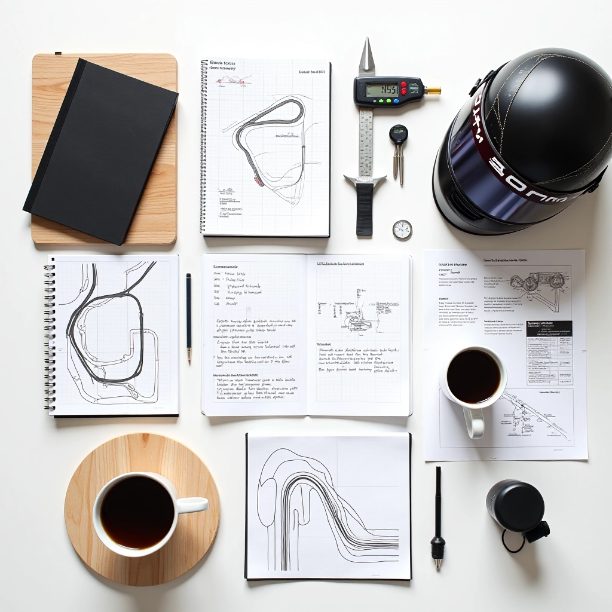

فريق ألفا درايفر التحرير
نحضر محتوى عملي وموثوق عن التحكم في دواسة الوقود وسرعة الخروج من المنعطفات
لماذا أنشأنا هذا الموقع
سائقو الكارتينج يسألون الأسئلة ذاتها مراراً: كيف أحسّن تحكمي بدواسة الوقود؟ كيف أخرج من المنعطفات بسرعة أكبر؟ لم نجد مكاناً واحداً يجمع إجابات واضحة وعملية لهذه الأسئلة. فقررنا أن ننشئ واحداً.
كل ما تقرأونه هنا يبدأ من ملاحظات حقيقية على حلبة القطامية وغيرها. نأخذ ما نراه، نتحقق منه مرتين، ثم نكتبه بطريقة يمكنك أن تستخدمها فوراً. لا مبالغات، لا نظريات بلا تطبيق عملي. فقط ما يعمل فعلاً.
كيف نعمل
كل مقالة تمر بعملية دقيقة من البحث والتحقق والمراجعة
البحث والملاحظة
نبدأ بمراقبة السائقين على الحلبة. ماذا يعملون بشكل صحيح؟ أين يقعون في الأخطاء؟ نسأل الأسئلة الصعبة ونكتب الملاحظات.
التحقق من التفاصيل
لا نكتب شيء بناءً على حدس واحد. نتحقق من كل تفصيل، نختبره، ونقارنه بالممارسات الموثوقة. إذا لم نكن متأكدين، لا ننشر.
الكتابة الواضحة
نكتب كما نتحدث — بدون ثرثرة، بدون مصطلحات معقدة لا فائدة منها. الهدف أن تفهم فوراً وتستطيع التطبيق.
المراجعة والتحديث
المحتوى الجيد يحتاج تحديث منتظم. نعود إلى كل مقالة، نتحقق من صحتها، ونضيف ما هو جديد ومهم.
ما الذي نكتب عنه
نركز على المواضيع التي تحدث الفرق الحقيقي على الحلبة
التحكم بدواسة الوقود
كيفية استخدام دواسة الوقود بدقة وسلاسة. من التسريع البطيء إلى التسريع القوي، ومتى تستخدم كل منهما.
سرعة الخروج من المنعطفات
إتقان فن الخروج السريع والآمن من المنعطفات. التوازن بين السرعة والتحكم، واختيار الخط الأفضل.
قراءة المسار واختيار الخط
كيفية قراءة ظروف الحلبة واختيار أفضل خط سباق. كل منعطف مختلف، وكل ظرف يتطلب قراراً مختلفاً.
قياس الأداء وتحسينه
كيفية تحليل أدائك وتحديد مجالات التحسين. الأرقام والملاحظات الدقيقة تقودك للتطور الحقيقي.
نصائح عملية وتمارين
تمارين محددة تساعدك على تطوير المهارات. كل تمرين له هدف واضح ويمكنك قياس التقدم فيه.
الجانب النفسي والتركيز
التحكم بالتركيز والثقة على الحلبة. المهارة الجسدية مهمة، لكن الذهن يحدد الفرق الحقيقي.
ما نلتزم به
الدقة قبل كل شيء
كل معلومة تُفحص مرتين. إذا كنّا غير متأكدين، نقول ذلك بصراحة. الصدق أهم من الكمال.
التحديث المنتظم
الرياضة تتطور. نعود إلى المقالات القديمة ونتأكد من بقاء المعلومات صحيحة وملائمة.
الكتابة للجميع
سواء كنت مبتدئاً أو متقدماً، محتوانا يخاطبك. لا نترك أحداً خلفنا.
التطبيق العملي
لا نكتب نظريات. كل شيء يجب أن تستطيع تطبيقه على الحلبة في الأسبوع القادم.
المقالات التي أنشأناها
ابدأ هنا إذا كنت تريد تحسين أدائك على الحلبة
أساسيات التسريع من المنحنيات
نقطة البداية لأي سائق يريد تحسين سرعة الخروج من المنعطفات. نشرح الأساسيات وننسيها خطوة بخطوة.
التحكم الدقيق بدواسة الوقود
الدقة هي الفرق بين السائقين الجيدين والممتازين. تعلم كيف تستخدم دواسة الوقود بتحكم كامل.
قراءة المسار واختيار خط السباق
المسار يتغير. تعلم كيفية قراءة ظروف الحلبة واختيار الخط الذي يناسبك في كل جولة.
قياس الأداء وتحليل البيانات
الأرقام لا تكذب. تعلم كيف تقيس تقدمك وتستخدم البيانات لتحديد ما تحتاج لتحسينه.
تواصل معنا
عندك اقتراح لموضوع؟ وجدت خطأ؟ أو تريد معرفة المزيد؟